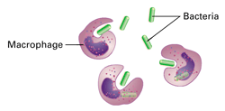
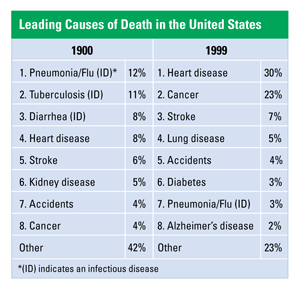

Reviewing Concepts
Multiple Choice
Choose the letter of the best answer.
1. An organism that causes an infectious disease is called a(n)
a. antibody.
b. vaccine.
c. pathogen.
d. histamine.
2. Infectious disease can be spread from one person to another by
a. shaking hands.
b. touching a doorknob.
c. inhaling.
d. all of the above.
3. An example of a nonspecific defense to infection is
a. the inflammatory response.
b. plasma cells.
c. cytotoxic T cells.
d. all of the above.
4. One role of T cells in the immune response is to
a. secrete antibodies.
b. secrete histamine.
c. produce antigens.
d. directly attack infected cells.
5. To what type of cells do helper T cells bind?
a. macrophages
b. cancer cells
c. red blood cells
d. stem cells
6. Which of the following is not a method of making a vaccine?
a. grinding up bacteria
b. using the antigens of a pathogen
c. using a pathogen with a similar antigen
d. using cytotoxic T cells
7. Which treatment would be used to reduce the symptoms of allergies?
a. vaccine
b. allergens
c. antihistamine
d. interferon
Short Answer
8. Identify the body's physical barriers to pathogen invasion.
9. How does phagocytosis help protect your body from infection?
10. Explain the importance of the shape of an antibody's antigen-binding site.
11. How do T cells help protect the body against cancer?
12. Why is a booster shot sometimes necessary?
13. Give one example of how passive immunity is acquired.
14. Explain the role of self/non-self distinction in autoimmune disease.
15. Explain why destruction of helper T cells by HIV is so harmful to the immune system.
16. Explain why organ rejection is not a disorder of the immune system.
Visualizing Concepts
17. Complete the table below with the role of the given cell or chemical, or with the term that matches the given role.

Applying Concepts
Analyzing Information
18. Analyzing Drawings Examine the drawings below to answer the following questions.

a. Is the above an example of nonspecific or specific immune system response? Explain.
b. How does the action of macrophages differ from the action of natural killer cells?
19. Analyzing Data Use the data in the table to answer the questions that follow.

a. Create two circle graphs of the leading causes of death in 1900 and 1999. Shade in the infectious disease sections in both graphs. (See the Skills Appendix to review circle graphs.)
b. Summarize the similarities and differences between the two graphs and suggest reasons for the differences.
c. Pose a new question about the data. For example, you might ask if the leading causes of death are different for males and females.
Critical Thinking
20. Comparing and Contrasting What are the major similarities and differences between nonspecific and specific defensive responses?
21. Relating Cause and Effect A biologist is trying to determine whether a pathogen is causing a disease in mice. Describe how the scientist might use Koch's method to find out.
22. Relating Cause and Effect Flu viruses undergo frequent genetic mutations that produce viruses with a new combination of antigens. How would this affect the immune system's ability to defend against the flu?
23. What's Wrong With These Statements?
Briefly explain why each statement is inaccurate or misleading.
a. Plasma cells attack pathogens by phagocytosis.
b. Interferon can prevent bacteria from growing.
c. Lyme disease can be transmitted by touching an infected object.
d. Once you have had an infectious disease, the same pathogen cannot attack you again.
Performance Assessment
Biology Research Project Go to the Web site for the Centers for Disease Control and Prevention (CDC). Choose ten diseases from the Health Topics list. Try to choose diseases that were not covered in this chapter. With a partner, write and illustrate a children's story that explains how the diseases are caused and transmitted, and how they can be prevented.